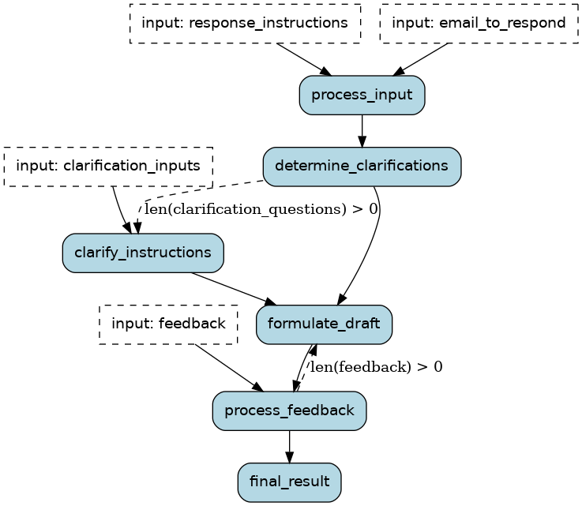

Web service (FastAPI, Flask, Django, etc.)¶
Burr is meant to run interactive apps. This means running it as part of a web-service that responds to requests, manages state, and documents its capabilities. The interactive nature of Burr (moving in/out of programmatic control) means we want to think carefully about how to expose our Burr applications to the web. Burr makes it natural to integrate with a web-server such as FastAPI.
In this tutorial we will use the email assistant example as a walk-through. Our goal is to expose the email assistant in a web-server that a UI can easily be built on top of. While we will not be building the UI here, we will link out to the final product for you to explore.
Email Assistant¶
The email assistant is an example of a “human-in-the-loop” generative AI application. This means that it requires human assistance at multiple points to build a better product.
Running the example¶
If you want to get a sense for how this looks, open the burr UI:
pip install "burr[start]"
burr
Then navigate to the email assistant via http://localhost:7241/demos/email-assistant,
You can create a new “application” and see it run through, with the telemetry on the right side.
Conceptual Model¶
At a high-level, the email assistant does the following:
Accepts an email + instructions to respond
Comes up with a set of clarifying questions (if the LLM deems it required)
Using the answer to those questions, generates a draft
Accepts feedback to that draft and generates another one, repeating until the user is happy
Returns the final draft
Due to the stochastic, often complex nature of LLMs, this has been shown to be one of the most promising applications – a collaboration between humans and AI to quickly build high-quality responses.
Modeling with Burr¶
This is a brief overview, for a more in-depth look at the email assistant, see the email assistant example. To model our email assistant with burr, we can use the following diagram:

There are three points at which the user can interact:
process_input: This is where the user inputs the email and instructionsclarify_instructions: The LLM has created a set of clarification questionsprocess_feedback: The user has provided feedback on the draft
(3) repeats until the user is happy with the draft (in our implementation this occurs when the feedback they provide is empty)
Recall that we use the word “application” in Burr to refer to an instance of this process above (with persisted state).
You can see the full application in application.py.
Integrating in a web server¶
For this example we will use FastApi and pydantic, but it should work with any other web-stack that uses python.
Endpoints¶
We construct the following endpoints:
POST /create: This will create a new application and return the IDPUT /initialize_draft/{id}/: This calls out toprocess_input, passing in the email and instructionsPUT /clarify_instructions/{id}: This will gives answers back to the LLMPUT /process_feedback/{id}: This will give feedback back to the LLMGET /{id}/state: This will return the current state of the application
The GET endpoint allows us to get the current state of the application – this enables
the user to reload if they quit the browser/get distracted. Each of these endpoints will return the full state of the application,
which can be rendered on the frontend. Furthermore, it will indicate the next API endpoint
we call, which allows the UI to render the appropriate form and
Using FastAPI + Pydantic, this becomes very simple to implement. First, let’s add a utility to
get the application object. This will use a cached version or instantiate it:
@functools.lru_cache(maxsize=128)
def _get_application(app_id: str) -> Application:
app = email_assistant_application.application(app_id=app_id)
return app
All this does is call to our function application in email_assistant that
recreates the application. We have not included the create function here,
but it calls out to the same API.
Data Model¶
Let’s then define a pydantic model to represent the state, and the app object in FastAPI:
class EmailAssistantState(pydantic.BaseModel):
app_id: str
email_to_respond: Optional[str]
response_instructions: Optional[str]
questions: Optional[List[str]]
answers: Optional[List[str]]
drafts: List[str]
feedback_history: List[str]
final_draft: Optional[str]
# This stores the next step, which tells the frontend which ones to call
next_step: Literal["process_input", "clarify_instructions", "process_feedback", None]
@staticmethod
def from_app(app: Application):
# implementation left out, call app.state and translate to pydantic model
# we can use `app.get_next_action()` to get the next step and return it to the user
...
Execution¶
Next, we can run through to the next step, starting from any point:
def _run_through(project_id: str, app_id: Optional[str], inputs: Dict[str, Any]) -> EmailAssistantState:
email_assistant_app = _get_application(project_id, app_id)
email_assistant_app.run( # Using this as a side-effect, we'll just get the state aft
halt_before=["clarify_instructions", "process_feedback"],
halt_after=["final_result"],
inputs=inputs,
)
return EmailAssistantState.from_app(email_assistant_app)
We halt_before the steps that require user instructions, and halt_after
the final result. This allows us to get the state after each step.
Finally, we can define our endpoints. For instance:
@router.post("/provide_feedback/{id}")
def provide_feedback(project_id: str, app_id: str, feedback: Feedback) -> EmailAssistantState:
return _run_through(project_id, app_id, dict(feedback=feedback.feedback))
This represents a simple but powerful architecture. We can continue calling these endpoints until we’re at a “terminal” state, at which point we can always ask for the state. If we decide to add more input steps, we can modify the state machine and add more input steps. We are not required to hold state in the app (it is all delegated to Burr’s persistence), so we can easily load up from any given point, allowing the user to wait for seconds, minutes, hours, or even days before continuing.
As the frontend simply renders based on the current state and the next step, it will always be correct, and the user can always pick up where they left off. With Burr’s telemetry capabilities they can debug any state-related issues, ensuring a smooth user experience.
Persistence¶
Note that we never called out to databases. It all just magically worked.. This is all because we decouple the persistence layer from the web-call. The application will be persisted (to whatever database you want), by burr’s plugin capabilities – read more here. This greatly reduces the amount you have to think about when developing. As Burr persistence is pluggable, you can write to your own database with whichever schema you prefer, customizing the schema for your project or using a generic one (state is just a JSON object – you can easily serialize/deseriealize it).
Additional concerns¶
Scaling¶
But is this webscale? As anything, it depends on how you implement it. Two factors determine the scalability of this system:
database layer – can the database support the volume of inputs/outputs?
compute layer – can the server run fast enough to keep up with the users?
For the database layer, it depends largely on the underlying database, as well as the
schema you use. That said, Burr makes it easier due to natural partitioning of the data
into application_id and partition_key (the latter could be the user ID), allowing common
operations (such as give me all applications for X user and give me the state of application Y)
simple if you index your state table on the application ID and partition_key.
For the compute layer, you can simply scale horizontally. The only tricky aspect is ensuring state synchronization and locking. As we cached the application object, we could potentially get into a position in which the state is out of sync. To solve this, you can either:
Use a locking method (either in the database) to ensure that only one server is running a given application at any point
Use sticky sessions/sharding to ensure that a given user always hits the same server
Handle forking/resolution of state at the persistence layer with a custom implementation
Or possibly some combination of the above.
Async¶
While we implemented synchronous calls, you can easily make these async by using async def and await in the appropriate places,
and using the arun method in Burr. Read more about async capabilities in applications,
and actions.
Streaming¶
You can use streaming to send back the stream of the output at any given point. You do this by creating a streaming action. You can then integrate with the streaming respose in FastAPI to send back the stream of the output. You can do this with any steps (intermediate or final) in your application.
Authentication/Data access¶
While Burr does not operate at the data access layer, this can be easily handles at the application layer. Any authentication system will tell you the user ID, which you can look in your DB to determine access to your partition key.
Wrap-up¶
In this tutorial we showed how to integrate Burr into a web-server. We used FastAPI and Pydantic to create a simple but powerful API that allows users to interact with the email assistant, leveraging Burr’s persistence capabilities to ensure that the user can always pick up where they left off.
At a high-level, the real value of representing your application as a state machine (as Burr does) is that it all becomes easier to think about. You don’t have to conceptually model state persistence, dataflow, and the web infrastructure in one piece – they can all be built separately.
In the future we will be automating this process, allowing you to generate a FastAPI app from the Burr application.
For now though, you can find the resources for the current implementation:
ui – this uses ReactQuery to call the API and react to render the state.